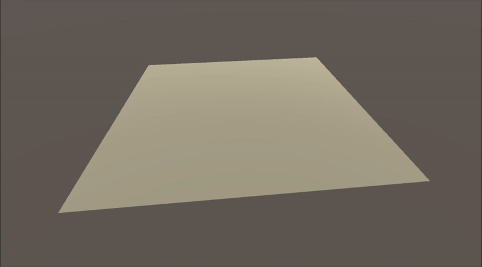
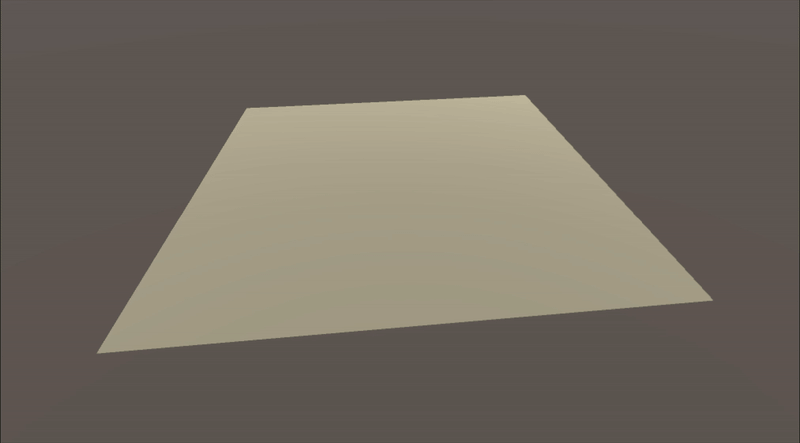
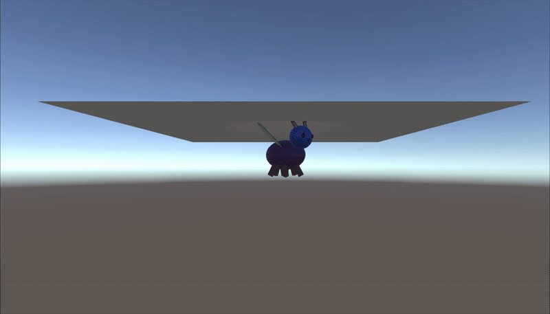

质点–弹簧拓扑
在整个质点网格上，用结构弹簧抵抗拉伸，剪切弹簧保持对角稳定，弯曲弹簧抵抗折弯。
计算机图形学 · UW CSE 457 期末作品
一个基于 Unity 的实时质点–弹簧布料求解器，结合了稳定的数值积分、拉伸约束、可配置的固定点、碰撞响应和交互式风场。

求解器
我将布料建模为由三类弹簧连接的质点网格：结构弹簧抵抗拉伸，剪切弹簧稳定对角方向的形变，弯曲弹簧抵抗折弯。
每一帧都会累积弹簧力和全局力，用 Verlet 积分推进非固定质点，处理碰撞与过度拉伸约束，再把修正后的位置写回用于渲染的网格。
固定点规则支持多种固定配置。模拟循环还集成了项目提供的碰撞工具和感知表面的风场工具，包括湍流阵风以及风向、风力的实时调节。
实现
在整个质点网格上，用结构弹簧抵抗拉伸，剪切弹簧保持对角稳定，弯曲弹簧抵抗折弯。
根据静止长度、刚度和弹簧方向计算弹簧力：拉伸时将质点拉近，压缩时将其推开。
采用 Verlet 积分，并加入过度拉伸约束，在不真实的拉伸破坏布料稳定性之前修正弹簧。
逐帧管线：受力累积、积分与碰撞处理、约束求解，最后更新网格顶点。
通过固定点检测支持多种固定方式，并将课程提供的碰撞和风场辅助工具集成进模拟循环。
模拟场景


